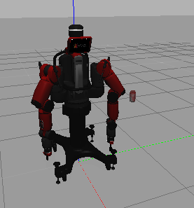
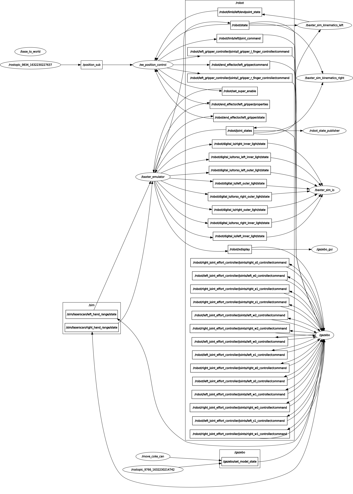

BANXTER PROJECT - SOFAR - Robotics Engineering UNIGE
Configure the IP of the local machine: open ~/catkin_ws/baxter.sh (i will from now on assume that catkin_ws is the name of the workspace)with a text editor and modify the following line by inserting the Ip address of current machine of:
your_ip="130.251.13.108"
Execute the script to initialize the simulation
cd ~/catkin_ws
./baxter.sh localhost
roslaunch baxter_control_sofar baxter_world.launch
Start the simulation: this launch file will spawn the baxter robot in a Gazebo simulation, together with all the services necessary. In addition, it will spawn a SDF model of a can of coke (the gravity and collision are disabled on this model). The can will act as a placeholder to better visualize the Baxter's left end effector position goal. 
Is possible to launch all the nodes separately to test if each one is working properly:
Using launch files, start baxter simulation, when it has spawned correctly launch the second launch file in a new terminal window: (this will include all the steps below)
roslaunch baxter_control_sofar baxter_world_test.launch
roslaunch baxter_control_sofar spawn.launch
start each node separately
start baxter simulation
cd ~/catkin_ws
roslaunch baxter_control_sofar baxter_world.launch
spawn coke model
rosrun gazebo_ros spawn_model -file /home/rick/.gazebo/models/coke_can2/model.sdf -sdf -x 0.5 -y 0.5 -z 1 -model coke_can2
start inverse kinematic script
rosrun baxter_control_sofar ik_service_client2_topic.py -l left
start the script to move the model of the coke can
rosrun baxter_control_sofar move_coke_topic.py
move coke model by publishing on the gazebo topic:
rostopic pub /gazebo/set_model_state gazebo_msgs/ModelState "model_name: 'coke_can2'
pose:
position:
x: 0.5
y: 0.5
z: 0.5"
in alternative open a new bash script and run this command:
rosrun baxter_control_sofar move_coke_topic.py
publish point on the topic /coke_can_coords
rostopic pub /coke_can_cods geometry_msgs/Point "x: 0.5
y: 0.4
z: 0.8"
rostopic pub position_sub geometry_msgs/Point "x: 0.5
y: 0.4
z: -0.1"
 Most of the topics and nodes shown in the image are the ones generated by the Baxter's simulation and the control SDK. Here follow the description of the implemented nodes:
move_coke_can: this node will subsribe to the topic coke_can_coords (a Point message) and it will republish to the Gazebo service /gazebo/set_model_state as a ModelState, to change the coke model's position in Gazebo.ee_position_control: the node will subscribe to the topic /position_sub, which will contain the goal position of the left end-effector of Baxster. The node will then call Baxter's /PositionKinematicsNode/IKService that will return the left arm's joint position to achieve the EE positioning. The message containing the joint's position will then be published in /robot/limb/left/joint_command. If the goal cannot be achieived (a robot's joint could be in a singularity), the robot will move in a joint position without singularities and will try again to reach the goal, if still it cannot be reached a "FAILED" message will be printed on the terminal.